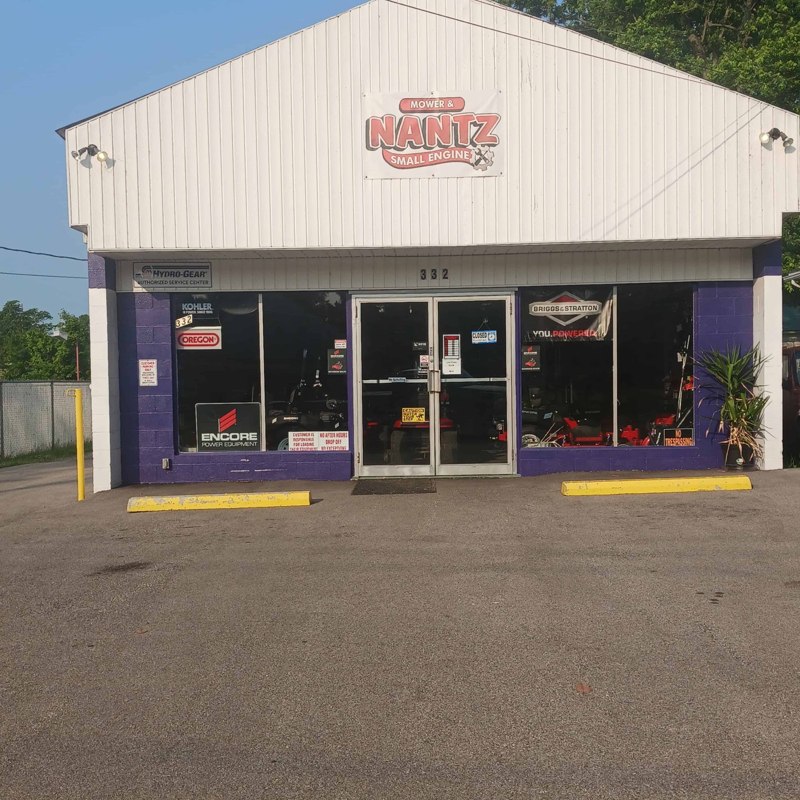
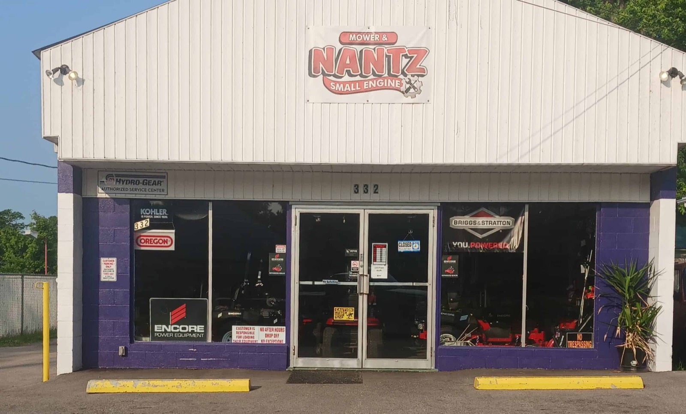

Service & repair
Tune-ups, seasonal service and major repairs on mowers, blowers, chainsaws, trimmers, edgers, log splitters, wood chippers, generators and pressure washers.
See servicesMower & small engine repair · Henderson, Kentucky
Service and repair for mowers, blowers, chainsaws, trimmers, edgers, log splitters, wood chippers, generators, pressure washers and more. You name it, we can fix it.
Tue–Fri 9 am – 4 pm · Sat 9 am – noon

We offer our professional knowledge on all lawn and garden equipment, and we’re here to help with any questions you have. Please stop by the shop to see what we can do for you.
Tune-ups, seasonal service and major repairs on mowers, blowers, chainsaws, trimmers, edgers, log splitters, wood chippers, generators and pressure washers.
See servicesA large selection on the shelf. If we don’t have the part you need, we can get it — many parts within 24 to 48 hours. Bring the model and serial number.
Ordering partsNew lawn and garden equipment from Encore, Husqvarna, Maruyama and RedMax — with free setup on equipment you buy from us.
Free setup

From the engine to the hydro drive, we work on the names you’ll find on your equipment.
Owner Damon Nantz learned to fix things in his dad’s garage in Anthoston, Kentucky. Decades later, a side gig in a shop behind the house turned into a storefront on Yeaman Avenue.
Damon’s father builds a tractor from an old Model-T Ford, clears the land and puts up a house and a garage from used lumber.
At 12, mowing lawns, Damon’s riding mower breaks down after three yards. He and his dad fix it in the little garage — good as new.
Damon starts tuning pianos. In the slow summer months, he’s back working on mowers in a shop behind the house.
A part-time repair shop opens. Word of the quality spreads fast, and the shop behind the house is soon too small.
An old auto parts store becomes the new home of Nantz Mower & Small Engine, opened on November 25, 2020.
“For years we’ve been brought mowers and small engines that were broken with unknown problems — and we’ve worked hard to bring them back to life, time after time.”
No. 04 — What people are saying
“Great business! The owner really knows his stuff. He’s honest, knowledgeable and hardworking. And if you bring him something that he can’t help you with, he will recommend someone who can help you. It’s hard to find a business in the service industry that lives up to a customer’s expectations.”Jason Bellew
“The only place to go for the best service at an affordable price.”Larry Taylor
“My mower runs better than when it was new! I’m hauling the other grandpa’s equipment there today!”Gary Mayes
Testimonials as published on nantzmowerandsmallengine.com.
Fees, deposits and what to bring. Anything else, just call the shop.
332 Yeaman Ave.
Henderson, KY 42420
| Tuesday | 9:00 am – 4:00 pm |
| Wednesday | 9:00 am – 4:00 pm |
| Thursday | 9:00 am – 4:00 pm |
| Friday | 9:00 am – 4:00 pm |
| Saturday | 9:00 am – 12:00 pm |
| Sunday | Closed |
| Monday | Closed |
